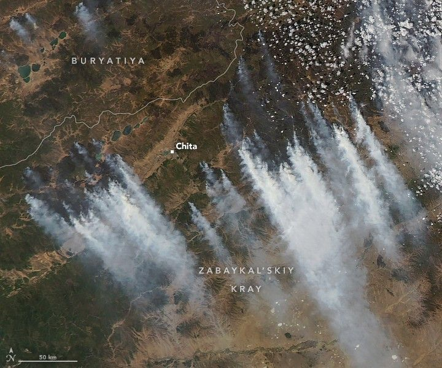

Smoky Zabaykal’skiy
As soon as snow melted from Russia’s Zabaykal’skiy Kray in mid-March 2025, satellites began detecting large numbers of wildland fires burning in the grasslands and forests surrounding Chita, the territory’s capital. Two months later, fires continued to rage around the city.
The MODIS (Moderate Resolution Imaging Spectroradiometer) on NASA’s Aqua satellite captured this image of smoke streaming from multiple fires near Chita on May 19, 2025. The city, a stop along the Trans-Siberian Railway, has a population of about 350,000. News reports indicate that fires were active on the city’s outskirts on May 20 and were edging closer to the city center as firefighters worked amid dry, windy conditions.
On May 20, 2025, Russia’s Aerial Protection Service reported 49 fires burning across nearly 700,000 hectares (2,700 square miles) in six regions of the country. Thirty-three fires were in Zabaykal’skiy (also called Transbaikal) and nine in Buryatiya, both of which border Mongolia. Russian officials reported deploying 2,700 personnel and 13 aircraft to fight the fires, including more than 1,000 paratroopers and airborne troops in Zabaykal’skiy.